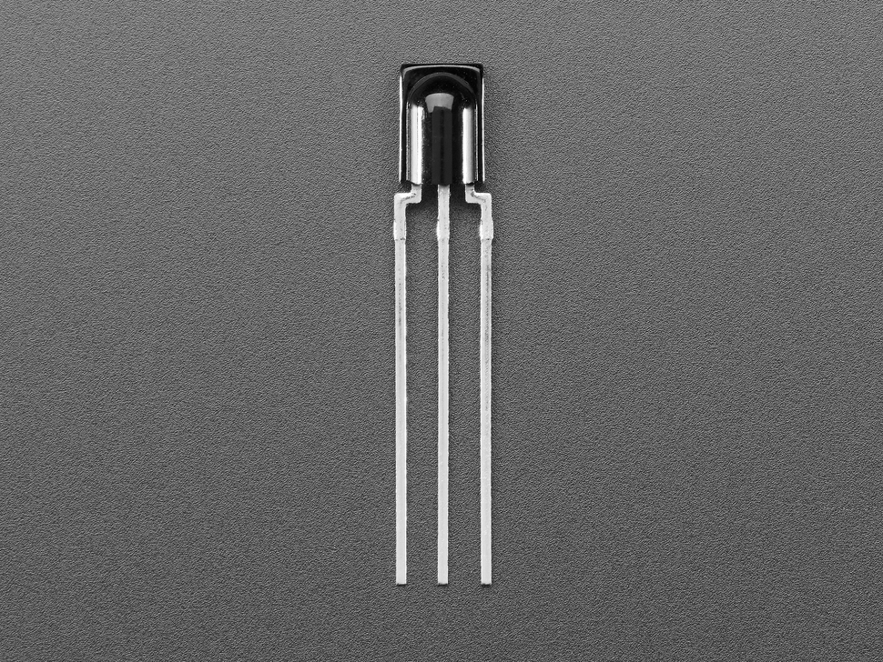

<!doctype html><html lang="ko"><meta charset="utf-8"><title>ESP32 TSOP38238 배선</title><script type="module" src="https://unpkg.com/@wokwi/elements@1.9.2/dist/wokwi-elements.bundle.js"></script><style>@font-face{font-family:Pretendard;src:url('../../assets/Pretendard-Regular.ttf')}body{margin:0;font-family:Pretendard,'Malgun Gothic',sans-serif}.canvas{width:950px;height:655px;position:relative;background:white}.label{position:absolute;font-size:23px;font-weight:bold}.foot{position:absolute;left:450px;top:470px;font-size:22px;line-height:1.65}</style><main class="canvas"><h1 style="position:absolute;left:35px;color:#315DAB;font-size:32px">ESP32 DevKit v1 · TSOP38238</h1><wokwi-esp32-devkit-v1 style="position:absolute;left:55px;top:110px;transform:scale(2.65);transform-origin:top left"></wokwi-esp32-devkit-v1><svg width="950" height="655" style="position:absolute;inset:0"><path data-pin="esp:D18" d="M323.44 326.5l30 0" stroke="#875e00" stroke-width="4"/><circle cx="353.44" cy="326.5" r="11" fill="white" stroke="#875e00" stroke-width="2"/><text x="353.44" y="331.5" text-anchor="middle" font-size="15" fill="#875e00">1</text><path data-pin="ir:OUT" d="M648 392.1l-12 35" stroke="#875e00" stroke-width="4"/><circle cx="636" cy="427.1" r="11" fill="white" stroke="#875e00" stroke-width="2"/><text x="636" y="432.1" text-anchor="middle" font-size="15" fill="#875e00">1</text><path data-pin="esp:GND.1" d="M323.44 504.85l30 0" stroke="#222222" stroke-width="4"/><circle cx="353.44" cy="504.85" r="11" fill="white" stroke="#222222" stroke-width="2"/><text x="353.44" y="509.85" text-anchor="middle" font-size="15" fill="#222222">2</text><path data-pin="ir:GND" d="M668.7 392.1l0 35" stroke="#222222" stroke-width="4"/><circle cx="668.7" cy="427.1" r="11" fill="white" stroke="#222222" stroke-width="2"/><text x="668.7" y="432.1" text-anchor="middle" font-size="15" fill="#222222">2</text><path data-pin="esp:3V3" d="M323.44 530.02l30 0" stroke="#ae2329" stroke-width="4"/><circle cx="353.44" cy="530.02" r="11" fill="white" stroke="#ae2329" stroke-width="2"/><text x="353.44" y="535.02" text-anchor="middle" font-size="15" fill="#ae2329">3</text><path data-pin="ir:VS" d="M690.3 392.1l12 35" stroke="#ae2329" stroke-width="4"/><circle cx="702.3" cy="427.1" r="11" fill="white" stroke="#ae2329" stroke-width="2"/><text x="702.3" y="432.1" text-anchor="middle" font-size="15" fill="#ae2329">3</text></svg><div class="label" style="left:450px;top:75px">렌즈가 보이는 정면 · 같은 번호끼리 연결</div><div class="foot">① D18 ↔ 1 OUT<br>② GND ↔ 2 GND<br>③ 3V3 ↔ 3 VS</div><div style="position:absolute;left:450px;bottom:17px;font-size:17px">USB 분리 후 배선<br>Adafruit 157-05 사진 · ESP32 도형 Wokwi MIT</div></main></html>
